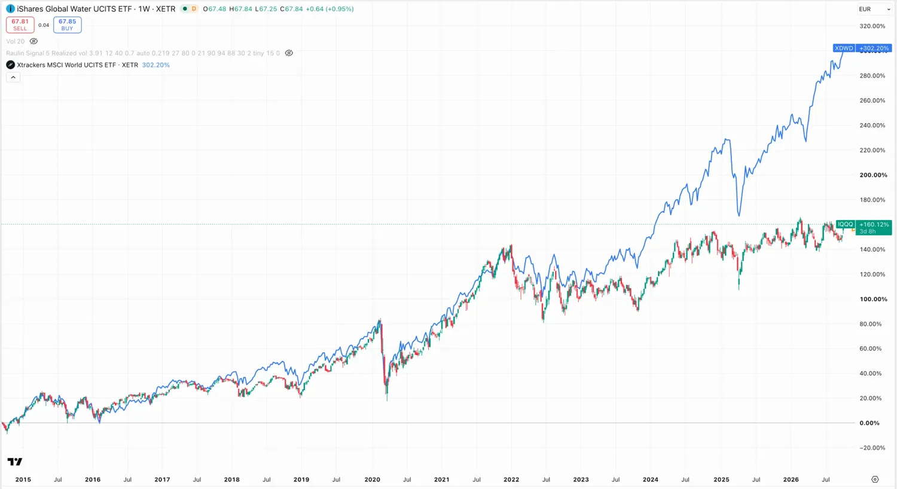

Warum künstliche Intelligenz Wasser verbraucht, wo es knapp wird, welche drei ETFs es gibt — und warum sie teurer sind, als du denkst.
Wenn du eine künstliche Intelligenz bittest, dir eine kurze E-Mail zu schreiben, verbraucht das im Hintergrund etwa einen halben Liter Wasser. Nicht als Bild gesprochen — real verdunstetes Kühlwasser in einem Rechenzentrum.
Logarithmische Achse, sonst wäre der erste Balken unsichtbar. Der Wert für die E-Mail stammt aus einer Untersuchung der University of California, Riverside, und schwankt stark je nach Rechenzentrum und Standort — zwischen etwa einem Glas und gut einem Liter. Eigene Darstellung.
Chips erzeugen Wärme, und Wärme muss weg. Große Rechenzentren tun das über Verdunstungskühlung: Wasser wird versprüht, verdunstet und nimmt die Wärme mit. Das ist billiger und stromsparender als reine Luftkühlung — aber das Wasser ist danach weg, nicht nur warm.
Dazu kommt ein zweiter, größerer Posten, den fast niemand mitrechnet: Der Strom für diese Rechenzentren wird selbst mit Wasser erzeugt. Kraftwerke kühlen ebenfalls.
Anteil am weltweiten Süßwasserverbrauch, gerundet. Daten: FAO und UN-Wasserbericht. Eigene Darstellung. Rechenzentren stecken in der Industriezahl und sind darin bisher ein kleiner Posten — genau das ändert sich gerade.
Daraus folgt der eigentliche Punkt: Mit Wasser selbst lässt sich kaum Geld verdienen — in den meisten Ländern ist es ein regulierter Grundversorgungspreis. Verdient wird an allem drumherum: Leitungen, Pumpen, Filter, Zähler, Entsalzung, Abwasseraufbereitung. Genau das steckt in den Fonds unten.

Beispiele, keine Empfehlungen. Alle drei sind UCITS-Fonds, also in Europa zugelassen und über die üblichen Broker handelbar.
| Fonds | ISIN / Kürzel | Was drin ist |
|---|---|---|
| iShares Global Water | IE00B1TXK627 | Die 50 größten Wasserfirmen der Welt. Der breiteste und bekannteste der drei. |
| L&G Clean Water | IE00BK5BC891 | Enger gefasst auf sauberes Wasser, Aufbereitung und Entsalzung — also eher Technik als Versorger. |
| Amundi MSCI Water ESG | WATU | Breiter globaler Wasser-ETF nach Nachhaltigkeitskriterien. |
Themen-ETFs schwanken stärker als der breite Markt und haben höhere Gebühren: rund 0,5 bis 0,65 Prozent im Jahr gegenüber 0,1 bis 0,2 Prozent bei einem normalen Welt-ETF. Das klingt nach wenig, ist aber das Drei- bis Fünffache.
Deshalb gehört so ein Fonds für mich in die kleine Beimischung und nicht ins Zentrum eines Depots. Der Kern bleibt breit und billig — dazu steht alles im Fahrplan für den Anfang.
Schau in die größten Positionen, bevor du kaufst. In Wasser-Fonds stecken zu einem guten Teil Versorger und Industriekonzerne — Firmen, die Pumpen, Ventile und Messtechnik bauen, oder die ein Wassernetz betreiben. Das ist kein Fehler, aber es heißt: Du kaufst eher solide Infrastruktur als eine Knappheitswette.
Wer den Fonds mit der Vorstellung kauft, bei der nächsten Dürre schnell reich zu werden, wird enttäuscht. Wer ihn als langweiligen Baustein mit sehr langfristigem Rückenwind sieht, liegt richtiger.
Ich halte das Thema als kleine Beimischung per Sparplan, nicht als Einmalkauf — bei Themen-Fonds ist der Einstiegszeitpunkt besonders heikel, weil sie meistens dann beworben werden, wenn sie schon gelaufen sind.
Was ich beobachte, ist nicht der Wasserpreis, sondern wo neue Rechenzentren gebaut werden. Entstehen sie weiter in trockenen Regionen, wird aus dem Nebenthema ein politisches — und dann wird es für die Firmen interessant, die das Problem lösen.